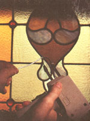

HAND SKILLS
How to make your own stained glass windows
Waking up to warm sunlight streaming in through your window is one of life's great pleasures. But it's nothing compared to sunlight streaming through stained glass, transforming sunrays into rich and various colors. These days, you can buy an average-size stained-glass window for about $250, not including the installation fee. Or, if you're someone who enjoys making projects with your hands-and you have the time to spare-you can create your own window for about $75 to $100. The cost will lessen significantly the next time you make one because most sup plies must only be purchased once. 4-053-01i1.jpg" width="150" height="216" /> You will also have the benefit of selecting your own design and color. Below is a checklist of necessary supplies, followed by places that you buy those that are harder to find.
-one pound of glass in various colors
-3/4" plywood
-fine-point, permanent marking pen
-glass cutter: stained glass supplier
-light oil or turpentine
-special glass file
-grozing pliers: stained glass supplier glass file
-china marker (grease pencil)
-2 quarter-round wooden molding strips or two spare feet of plywood
- six foot lengths of 3/16" " or 1/4" channeled lead strips (cames) in "H" shape and/or "U" shape
- diagonal cutting pliers (wire cutters)
- farrier's (horseshoe) nails: stained glass supplier or local equestrian shop
-one-pound roll of 50/50 (50 percent tin; 50 percent lead) solid-wire solder: local plumbing supply shop
- one small can of paste flux: local plumbing supply shop
- small, stiff wire brush
- 50- to 120-watt soldering iron or soldering gun with a chisel tip: stained glass supplier
- small copper loops for hanging
-glazing compound: hardware stores
- knife or ice pick
-whiting (powdered calcium carbonate or plaster of paris)
-scrub brush
-soap and water
Find a roomy work area such as a table or bench in your garage or an unused part of the house. A sheet of 3/4" plywood placed across two sawhorses makes an ideal workbench and can be rapidly disassembled if necessary. If there are small children in the family, make a special effort to keep your work area off-limits; broken glass pieces and strips of lead are extremely dangerous to curious kids.
Begin a stained-glass project by making a black-and-white line drawing of the pattern. The design books on the market often use patterns too complex for first efforts; instead, create your own, sticking to simple shapes, straight lines, and gentle curves. Limit the project size by keeping both the length and the width between 10 to 18 inches, and only making 15 to 25 glass pieces at a time.
Drawing your design on graph paper helps keep it square and in proportion, and your pattern shape should comply with the following guidelines: 1) Never draw a "lead line" (one that will hold your shards together) that stops in space. These lines must be connected to other lead lines, 2)
Never design a right or acute angle without adding at least one lead line from that apex (ended point) of the angle, and 3) Always divide large pieces of background glass into small shapes, and avoid having tight curves that jut into such shapes.
Upon completing and sketching your design in full size, go over the lead lines with your marking pen. This pen should draw a line about 1/16" wide, just the right size for your "lead allowance" (the space which will be taken up by the leading). It's important to incorporate this allowance into the pattern: If you don't, the glass panel may distort as you place the lead strips between its pieces.
Glass cutting is a simple skill which, for some reason, many people believe is cloaked in mystery. When purchasing a glass cutter, follow the recommendation of a stained-glass supplier, who may let you experiment with a few different types before buying one. A visit to a local commercial glass store or framing shop will usually yield a box of free scrap glass, which is perfect for practice cutting. Just lay a pad of newspapers on your work surface before you start.
Hold the cutter comfortably in the palm of your hand, and dip its tip in some light oil or turpentine. Then set the scoring wheel close to the edge of the glass, press down firmly, and push it away from you across the glass surface. Holding and pushing the tool like a miniature wheel barrow enables you to see exactly where the cutting wheel is going and helps you follow curved lines around small patterns with better accuracy. Always run the cutter off the opposing edge of the glass, lessening the pressure as you do so, and never go over lines (called score lines) twice. After cutting a fine groove in the pane, break the sections apart carefully. If the score line is straight or gently curving, grasp the glass on either side of the score and snap it in two with a downward twist. If the cut is more radically curved, tap the underside of the line with the handle of the cutter and then separate the pieces.
When cutting colored panes, apply a bit more pressure used for the "softer" window material. Set the stained-glass piece on top of the full-size (called a cartoon), check the lead allowance, and cut to the inside edge of the marker line. Then, as you cut out each individual shape, reposition it on the pattern and check to see whether the black marker line shows all the way around the perimeter of the glass. If stained glass is almost opaque, making the pattern impossible to see, draw the shape on white adhesive-backed paper, cut it out, and apply the gummed side directly to the glass. The paper can be peeled off once the piece has been cut.
A pair of grozing pliers-tools with little teeth on their rounded jaws-will do any glass "nibbling" that might be necessary, and a special glass file will smooth the edges to make the pieces fit the pattern perfectly. Number the shapes with a china marker as they are cut, place a corresponding numeral on the pattern, and set the glass aside.
Before fitting the glass pieces together, make a frame by nailing the two molding strips together at a right angle to form a corner on your workbench. Or, if you prefer, prepare a separate piece of 1/4" or 3/8" plywood-about two feet square-with molding strips along two adjacent sides. Either way, brace the glass against this molding corner while making the window.
The lead used to hold the stained-glass pieces together comes in different sizes and shapes. Ask for six foot lengthscalled cames--of 3/16" or 1/4" channeled lead in two shapes: The "H" shape, which has a channel on each side, serves as a common border when two pieces of glass meet; the "U" shape is used around the outer edges of the entire piece.
The metal will be curved-and perhaps twisted-when purchased, so it's important to stretch the strips before they're sliced into measured pieces. The easiest way to accomplish this is with a friend's help. Each of you should grab an end of the lead came with a pair of pliers, brace yourselves, and exert a strong, steady tug until it straightens out and actually stretches an inch or so. Strips of lead can easily be cut with an inexpensive pair of diagonal cutting pliers that have been ground or filed to a sharp edge. Always sever the lead across the open channels to obtain a clean cut. If you close down on the top of the lead, the edges will often mash together, crushing the channels, and making the joint unusable.
Now, put your design pattern in the corner of your workboard, place two cut lead strips against the square molding corner, and fit your first piece of glass into the channels of the lead. To hold this (and subsequent pieces of glass) against the corner, tap the farrier's nails into your workbench board with their flat sides against the edge of the glass until you've prepared the next length of lead. Continue to fit the glass pieces into the metal channels, cutting and bending appropriate strips of lead as you progress, pulling and resetting the nails to hold everything tight, and always building out from the corner in a logical order. Remember to keep matching the glass shapes to the pattern underneath.
After all the lead strips are in place, your artwork is ready to be soldered (united). Clean all the lead joints with a small, stiff wire brush until they're shiny. Then apply flux (with a paint or paste brush) and begin using your soldering iron or gun to mold the soft metal.
Place about a 1/4" of the end of the wire solder over the cleaned and fluxed lead joint, and melt it with the heated iron. Then, working quickly and gently, move the tip of the iron in small, circular motions, out from the center of the joint and back. With a little practice, you'll be a wiz at shaping smooth solder joints. Be careful that your soldering iron doesn't overheat and melt the lead in the piece that your working on. To keep the temperature of the iron constant, unplug the unit when it gets too hot (or install an in-line rheostat to monitor the temperature of the tool). If it has been sitting there plugged in for a while, test it on a piece of scrap lead before putting it to use. After completing all the joints on both sides of the window, solder copper loops to the upper-back corners of the panel for easier hanging.
If you wish to display your artwork in a window, it will need to be puttied. Work some glazing compound under the lead lances around every piece of glass, front and back. This will make your panel relatively air- and watertight and a great deal stronger. In order to preserve the effect of the clean, crisp lead lines, trim off any of the excess compound with a sharp knife or an ice pick.
The final step is cleaning. Use a handful of whiting to clean the glass and darken the lead. Brush the material onto the panel with an old scrub brush, and wash with soap and water so it will sparkle.
|
GARY BUSS/FPG |
 D.E. COX/FPG |
|